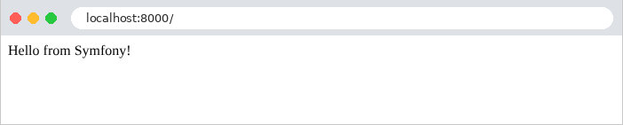
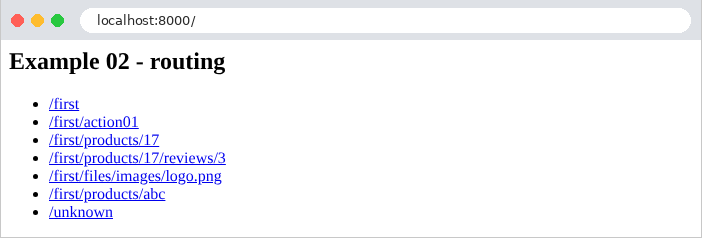
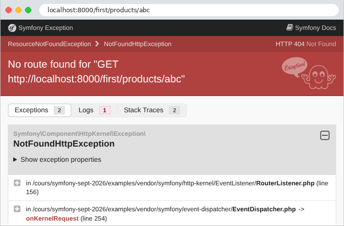
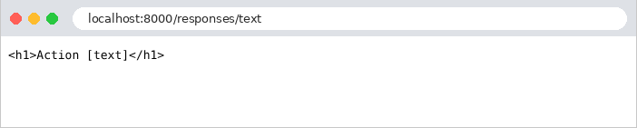
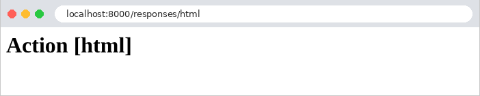
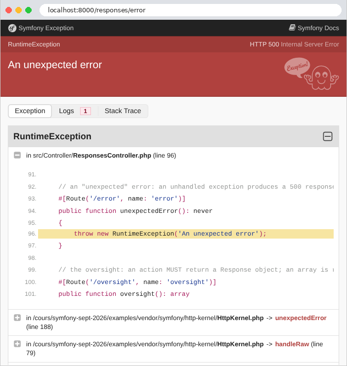
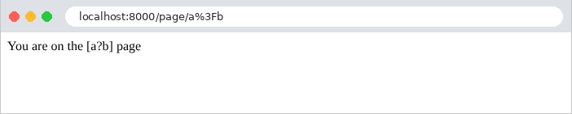

2. Actions, Routing, Responses
This chapter examines the path a request takes, from the browser to the action that processes it, and the response that this action returns. Views will not be covered until Chapter 4: here, actions return text or JSON directly.
2.1. Example 01: The Structure of a Symfony Application
The first example is the smallest possible [Symfony] application. A project created by [composer create-project symfony/skeleton] contains about twenty files and folders, and a project created by [symfony new --webapp] contains many more (see introduction); here, we’ll keep only those that the application cannot do without:
- [public/index.php]: the application’s entry point. All HTTP requests, regardless of their URL, are handled by this file. The [public] folder is the only folder that the web server serves: it also contains the static files (style sheets, images, scripts), and only those;
- [src/Kernel.php]: the core of the application, which assembles it and processes requests. The [src] folder contains all the application’s classes;
- [config]: the application configuration: the list of its bundles ([bundles.php]) and the configuration for each one ([packages] folder);
- [var]: the files that the application writes during operation: the cache ([var/cache] folder), where [Symfony] stores the compiled configuration, and, later, the sessions. This folder is created by [Symfony] on the first request;
- [.env]: the application’s settings, in the form of [NAME=value] pairs;
- [bin/console]: the command-line tool for [Symfony];
- [composer.json]: the project description for [Composer].
2.1.1. Entry point: public/index.php
- Line 1: A [PHP] file begins with the [<?php] tag. Everything that follows is [PHP] code; a file containing only code does not close this tag;
- line 2: a comment, from [//] to the end of the line ([/* ... */] delimits a multi-line comment);
- lines 4–7: the statement [use] imports a class name. The full name of a class, [PHP], includes its namespace (namespace), which is equivalent to the packages in [Java]: [Symfony\Component\HttpFoundation\Request] is the class [Request] in the namespace [Symfony\Component\HttpFoundation]. After [use], the file can simply write [Request]. The names of the classes in [Symfony] indicate where they come from: [Component\HttpFoundation], the component that represents requests; HTTP, the component that represents responses; [Component\Dotenv], the one that reads the file [.env]; [Component\ErrorHandler], the one that handles errors. [App\Kernel] is a class of the application itself;
- line 11: [require] executes another file, [PHP]. [__DIR__] is the directory of the current file (here, [public]); [dirname(__DIR__, 2)] goes up two levels to the [examples] folder; the [.] operator concatenates two strings. The file [vendor/autoload.php], written by [Composer], installs the class loader: the first time a class is used, it finds and loads the file that defines it. Thanks to this, you never have to write [require] for classes. The [vendor] folder is part of the [examples] folder, which is shared by all the examples (see introduction). A [require] returns the value of the executed file: [vendor/autoload.php] returns the loader, stored in the variable [$loader]. In [PHP], a variable’s name always begins with [$];
- Line 12: The class loader for [Composer] knows the classes in the libraries located in the [vendor] folder. It must also know the classes in the application, which are conventionally stored in its [src] folder, under the [App] namespace. In a standard project, [Composer] obtains this information from the project’s [composer.json] file. Our examples share a single folder named [vendor], but each has its own folder named [src]: each example therefore declares it to the loader itself, via its [addPsr4] method (the [PSR-4] standard maps namespaces to folders: the [App\Controller\FirstController] class is in the [src/Controller/FirstController.php] file). The operator [->] refers to a member of an object. In a string enclosed in single quotes, [\\] refers to a single character [\];
- line 15: [new Dotenv()] creates an object of class [Dotenv], whose method [bootEnv] reads the file [.env] (presented below) and stores its variables in the arrays [$_SERVER] and [$_ENV] of [PHP], where the application will find them;
- lines 18–20: debug mode (the file [.env] infers this from the environment; see below). [Debug::enable()] converts any [PHP] error—even a simple warning—into an exception, which is displayed on a detailed error page (example 03). [::] refers to a member of a class: [enable] is a static method, which is called on the class without an object;
- Line 23: creation of the application core, an object of the [App\Kernel] class, with two parameters: the environment ([dev]) and debug mode ([true]). [(bool)] converts the value to a Boolean;
- line 24: [Request::createFromGlobals()] creates a [Request] object from the HTTP request received by [PHP] ([PHP] stores it in its “superglobal” arrays [$_GET], [$_POST], [$_COOKIE], [$_SERVER]...);
- line 25: the kernel processes the request ([handle]) and returns a [Response] object. This is where it all happens: the kernel starts up (it assembles its bundles and builds its services), finds the action responsible for the request, executes it, and retrieves the response it produces;
- line 26: the response is sent to the browser: the status code, the headers, and then the body;
- line 27: the kernel completes the request: it executes the processing tasks that can wait until the response has been sent (see the chapter on the lifecycle).
These four lines summarize [Symfony]: a request goes in, a response comes out. The entire application is a function that transforms a [Request] object into a [Response] object. This file is the same for all examples. It also highlights a unique feature of [PHP]: the application is rebuilt with every request. The web server executes [public/index.php] from start to finish for each request it receives: it loads the classes, builds the core, processes the request, sends the response, and then forgets everything. No object survives from one request to the next. In the chapter on data scopes, we will see the consequences of this behavior, which is the opposite of that of [Java], [C#], or [Python], whose applications remain in memory between requests.
Building the kernel for every request would be costly if the entire configuration had to be re-read and interpreted each time. [Symfony] does this only once: it compiles its configuration into [PHP] code, stored in the [var/cache/dev] folder (for the [dev] environment), which it then reuses. In debug mode, it checks with each request to see if a configuration file has changed, and recompiles if necessary.
A typical [Symfony] project has a shorter [public/index.php] file, which delegates this task to the [Runtime] component of [Symfony] (the case study uses it): We chose to write it out in full so we could see what happens.
2.1.2. The core: src/Kernel.php
- line 4: the class’s namespace. Its full name is therefore [App\Kernel];
- line 11: the application’s [Kernel] class inherits ([extends]) from the [Kernel] class of [Symfony], which is imported under the name [BaseKernel] (the keyword [as] on line 8 renames the import, since both classes have the same name). This class is responsible for processing a request ([handle]);
- line 15: the statement [use], inside a class, does not import a name; instead, it incorporates trait, a reusable class fragment. [MicroKernelTrait] provides the core with its standard behavior: it reads the list of bundles in [config/bundles.php], their configuration in the [config/packages] folder, the services in [config/services.yaml] (Example 06), and the routes in [config/routes.yaml] (Example 02). It also searches for routes in the [Kernel] class itself: this is what allows this first example to be reduced to just that;
- lines 19–24: an action, a public method that processes a request. The attribute [#[Route('/')]] associates it with the path [/]: this is the routing. A [PHP] attribute, written as [#[...]], is information attached to the code (a class, a method, a parameter) that [PHP] ignores but that libraries read: the equivalent of [Java] annotations or [Python] decorators. [Symfony] makes extensive use of them;
- line 20: [: Response] declares the type of the returned value. Types are optional in [PHP], but when they are specified, [PHP] checks them at runtime;
- Line 23: The action returns a [Response] object, whose first parameter is the response body. This follows the rule for [Symfony]: an action always returns a [Response] object (Example 03).
2.1.3. Configuration: config/bundles.php, config/packages/framework.yaml, and .env
[Symfony] consists of bundles: packages that integrate functionality into the application ([Twig] views, security, database access, etc.). The list of the application’s bundles is in the file [config/bundles.php]:
The file returns an associative array: for each bundle, identified by its class name ([FrameworkBundle::class] is the full class name, as a string), it lists the environments where it is active (in this case, all of them). Our application has only one bundle, FrameworkBundle, which is the core of the framework and assembles the basic components: requests and responses, kernel, routing, service container, console, and so on. The following examples will add more. Each bundle has its own configuration, located in the [config/packages] folder, with one file per bundle, written in [YAML]:
[YAML] is a text format that describes data using indentation: [framework] (the key for FrameworkBundle) contains the key [secret]. Lines beginning with [#] are comments. The value [%env(APP_SECRET)%] is a reference to the variable [APP_SECRET], read from the process environment or, failing that, from the file [.env]:
- Line 3: the application environment: [dev] for development, [prod] for production (and [test] for automated testing). The environment determines the configuration: a [config/packages/prod/xxx.yaml] file would only be read in production. It also sets the debug mode, which is enabled by default except in production (the variable [APP_DEBUG] would allow you to set it otherwise): an unhandled exception then displays a detailed page (example 03), and [Symfony] recompiles its configuration as soon as it changes. This mode is intended for development, and development only: the error page reveals the application’s source code and configuration;
- line 5: the application’s secret key: a random string that [Symfony] uses to sign certain data (connection links, anti-CSRF tokens, etc.). Each example has its own.
Unlike with other frameworks, the [.env] file for a [Symfony] project is usually published along with the source code: it contains the default values for the variables, which are suitable for development. Installation-specific values (such as a password or the production secret key) are stored in a [.env.local] file, which is read after the main file but is never published; in production, these values are instead provided via actual environment variables, which take precedence over both files. Anything not specified in the configuration retains its default value, as defined by each bundle. The [php bin/console config:dump-reference framework] command displays all possible keys in FrameworkBundle, along with their default values (several hundred lines).
2.1.4. The bin/console tool and the composer.json file
The [bin/console] file is a [PHP] script that builds the kernel, just like [public/index.php], but to execute a command rather than process a request:
- Line 1: In [Linux] and [macOS], this line allows the file to be executed directly ([./bin/console]); under [Windows], you always enter [php bin/console];
- Line 17: The [Application] class of FrameworkBundle is a command-line application built on the kernel; it is aware of the kernel's services and configuration. [ArgvInput] represents the command-line parameters; [run] executes the requested command.
[php bin/console list] displays the list of available commands: about forty in this example, with more added as bundles are included. We will use several of them, including [debug:router], [debug:container], and [cache:clear]. Finally, the file [composer.json] describes the example:
This is a JSON document. It is not included for [Composer] (the example libraries are described by the file [examples/composer.json], see introduction), but for the core: [Symfony] searches for the project folder by working backward from the file [src/Kernel.php] to the first folder containing a file named [composer.json]. It is from this file that it finds all the others ([config], [var], [templates]...). The [composer.json] file for a standard project also contains the list of its libraries and the PSR-4 rule for its classes (lines 5–9), which our examples declare themselves to the loader (line 12 of [public/index.php]).
2.1.5. Execution
In a terminal window open to the [01-structure] folder, type [php -S localhost:8000 -t public]. [PHP] displays:
The [-S] option launches the development server integrated into [PHP]. It listens on port 8000 on the machine itself ([localhost]): it accepts only requests from that machine, which is suitable for development ([-S 0.0.0.0:8000] would open it up to other machines on the network). The option [-t public] sets the [public] directory as the site root: a file that exists in this directory is served as-is; any other URL is handled by [public/index.php]. It is stopped using [Ctrl-C]. This server is intended for development: in production, it will be a web server such as [Apache] or [Nginx], associated with [PHP-FPM] (see case study). It is not necessary to restart it after modifying the code or configuration: since [PHP] re-reads the files with every request, the change takes effect on the next request. ([Symfony] also offers its own tool, the [symfony] program, whose [symfony serve] command launches a more comprehensive server; it is described in the appendix.)
Let’s request URL and [http://localhost:8000/] using a browser:

then with [curl]. The [-i] option also displays the HTTP headers from the response:
The first line of the response contains the protocol version, the status code (200), and its description ([OK]). Next come the headers: the requested host, [Connection: close] (the development server closes the connection after each response), the version of [PHP], a cache directive (by default, [Symfony] prevents intermediaries from caching the response), the date, the content type, and [X-Robots-Tag: noindex], which instructs search engines not to index the page ([Symfony] adds this in debug mode: a site under development does not need to be indexed). An empty line separates the headers from the body of the response. In the rest of this document, we will no longer include the headers [Host], [Connection], [X-Powered-By], [Cache-Control], [Date], and [X-Robots-Tag], as they do not vary.
The header [Content-Type: text/html; charset=UTF-8] indicates that the response is HTML, whose characters are encoded in UTF-8. This is the choice of [Symfony] for a response whose action did not specify the type: the browser therefore interprets the string as HTML (here, without a tag, it is displayed as-is). Example 03 will show how to specify a different type. The response does not set any cookies: [Symfony] only creates a session when the application uses it (see the chapter on scopes).
With each request, the server console displays a few lines of log output: the connection being established, a message from [Symfony] indicating the chosen route, followed by the response code, the method, and the path.
The message [[info] Matched route] comes from the log (logger) of [Symfony]: Without a logging library installed, [Symfony] writes its messages to the process’s error output, which the development server displays. The route was assigned a name calculated by [Symfony] and [app_kernel_home] based on the class name and method name: the following example will name its routes automatically. After this first request, the [var/cache/dev] folder contains the compiled configuration: the application container ([App_KernelDevDebugContainer.php], Example 06), and the route table ([url_matching_routes.php]).
2.2. Example 02: Routing
Routing associates a URL and a method HTTP (GET, POST...) with an action. Writing all the actions directly in the core would quickly become unreadable; instead, they are organized into classes—the controllers. Example 02 has two:
The files [public/index.php], [bin/console], [composer.json], [.env], [config/bundles.php], and [config/packages/framework.yaml] are from Example 01: we will not list them again (only the example name and the secret key change). The [src/Kernel.php] core no longer has any functionality: it is reduced to its class and its trait. Each controller is a class in the [App\Controller] namespace, located in the [src/Controller] folder: this is the convention for [Symfony], and the standard [PSR-4] maps the two together (example 01).
2.2.1. The HomeController controller
- line 4: the class namespace. Its full name is therefore [App\Controller\HomeController];
- line 9: the class. By convention, a class name is written with a capital letter at the beginning of each word ([HomeController]), while a method or variable name starts with a lowercase letter ([action01Post]). A [Symfony] controller does not need to inherit from any class (the following example will introduce the parent class that is typically used);
- Line 12: The action's attribute [#[Route]], with three parameters, two of which are named: the value is associated with the parameter by its name ([name: 'home']), not by its position. The path [/], the route name ([home]), which will be used to generate its URL (example 04), and the accepted methods HTTP: [methods: ['GET']]. In [PHP], [[a, b]] is an array (array). Without the [methods] parameter, the route would accept all methods;
- line 13: the action [index], a public method of the class;
- lines 15–26: a multi-line string. The syntax [<<<'HTML'] ... [HTML] (nowdoc) delimits text that is written as-is, between two lines containing the same word, in this case [HTML]; the indentation of the ending line is removed from all lines. The action returns HTML, which is sent with the type [text/html] (see Example 01).
The action [index] thus returns a page HTML that contains links to the actions of the other controller:

2.2.2. The controller FirstController
- lines 10–13: a [#[Route]] attribute applied to the class provides a prefix for the routes of all its actions: [/first] for their paths, [first_] for their names. The URL of an action is the concatenation of the prefix and the path of its route;
- lines 16–20: the path [''] refers to the prefix itself: [GET /first];
- lines 23–34: the same path, for two methods—HTTP: [GET] and [POST]—handled by two different actions. The name of an action can be chosen freely: it is the attribute [#[Route]] that associates it with a URL and a method HTTP. [methods: ['GET', 'POST']] would associate both methods with the same action;
- Lines 39–43: [{id}] is a route parameter: this segment of URL can take on multiple values. The [$id] parameter of the action receives its value: for URL [/first/products/17], it is 17. By default, a route parameter accepts any text without a slash; the [requirements] parameter restricts it: the regular expression [\d+] (one or more digits, where [\d] denotes a digit and [+] denotes repetition) accepts only digits. Otherwise, the route does not match. The action parameter type [int] instructs [Symfony] to convert the value (a string, extracted from URL) to an integer. This is data binding, which the next chapter will examine in detail. In the string enclosed in quotation marks ["Product no. $id"], the variable [$id] is replaced by its value: this is interpolation (a string enclosed in single quotes, on the other hand, is written as-is);
- Lines 47–51: Two route parameters are passed to two action parameters. [Symfony] maps them by name; the order of the action parameters does not matter. This time, the constraints are written in the path itself, between [<] and [>]: this is shorter;
- lines 55–60: a route parameter containing [/]. The class [Requirement] of [Symfony] combines, in the form of constants, the most common regular expressions: [Requirement::CATCH_ALL] ([.+]: any characters, including slashes), [Requirement::DIGITS] ([[0-9]+]), [Requirement::UUID], [Requirement::DATE_YMD]...
2.2.3. The configuration: config/routes.yaml and config/services.yaml
All that’s left is to tell [Symfony] where the roads are:
The file [config/routes.yaml] describes the application’s routes, or, as in this case, specifies where to find them. The key [controllers] is an arbitrary name. The resource [routing.controllers] refers to the routes declared by the [#[Route]] attributes of the controllers recognized by the application. And it is the file [config/services.yaml] that makes them known to the application:
This file declares the application’s services: the objects that [Symfony] knows how to create on its own (example 06). Lines 10–11 turn each class in the [src] folder into a service. Thanks to line 8 ([autoconfigure]), [Symfony] examines each one: a class with a method that carries a [#[Route]] attribute becomes a controller, and its routes are added to the routing table. We’ll hardly ever write these two files anymore: they’re the same in all the examples.
2.2.4. Execution
Here are the responses to a few requests:
To send a POST request, use the [-X POST] option of [curl]:
The request POST is accepted as-is: [Symfony] does not have CSRF protection that applies to all requests. It protects forms one by one using its Form component (Example 18). A HTTP method that is not handled by any action for this path results in a 405 error ([Method Not Allowed]). The [Allow] header lists the accepted methods:
In debug mode, the response body is the detailed error page for [Symfony]—which we’ll see in Example 03—preceded by a comment (HTML) that summarizes the error. The two [X-Debug-Exception] headers also provide the error message and location, encoded as in a URL ([%20] for a space...): these are intended for development tools. A [GET] route also accepts the method [HEAD] (the same request as GET, without the response body), which [Symfony] handles itself.
A URL that no route handles results in a 404 error. This is also the case for an identifier that is not a number: the constraint [\d+] prevents the route from matching [/first/products/abc].
In a browser, in debug mode:

The error page for [Symfony] explains that no route was found (“No route found”) and displays the exception thrown by the router, [NotFoundHttpException]. Chapter 7 will show how to replace it with a custom page for the application. Note also that [Symfony] distinguishes [/first] from [/first/]: the second, URL, has no route, but rather than returning a 404 error, [Symfony] redirects the browser (example 04) to the first one:
The command [php bin/console debug:router], run in the example folder, lists all the routes in the application:
Each line lists the route name, the HTTP method, and the path. The route names in [FirstController] have indeed been prefixed with [first_]. [php bin/console debug:router first_product] would detail a route (its constraint, its controller); [php bin/console router:match /first/products/17] indicates which route corresponds to a path.
2.3. Example 03: Responses to an Action
What an action returns determines the response HTTP. Example 03 reviews the main cases:
The controller [ResponsesController] associates each URL and [/responses/xxx] with an action:
1 2 3 4 5 6 7 8 9 10 11 12 13 14 15 16 17 18 19 20 21 22 23 24 25 26 27 28 29 30 31 32 33 34 35 36 37 38 39 40 41 42 43 44 45 46 47 48 49 50 51 52 53 54 55 56 57 58 59 60 61 62 63 64 65 66 67 68 69 70 71 72 73 74 75 76 77 78 79 80 81 82 83 84 85 86 87 88 89 90 91 92 93 94 95 96 97 98 99 100 101 102 103 104 105 | |
Let’s break down this code:
- Lines 13–16: The controller inherits from the [AbstractController] class of FrameworkBundle. This is the parent class that is typically assigned to controllers: it provides them with shortcuts—methods that perform the most common tasks in a single line: [json], [redirect], [redirectToRoute], [render], [createNotFoundException], [addFlash]... We’ll encounter them throughout the examples;
- line 15: The class attribute assigns a path prefix, a name prefix, and the method GET to all routes; each action now only needs to specify its path and name;
- Lines 19–24: [new Response(...)] constructs a complete HTTP response: the body, the status code, and then the headers, in an associative array (an array in which each element has a key, here ['Content-Type'], written before the arrow [=>]). The class [Response] defines a constant for each status code: [Response::HTTP_OK] is equal to 200. The header [Content-Type] declares plain text ([text/plain]) here: the browser will not interpret the tags;
- lines 27–31: the same string, without a declared type: [Symfony] sends it with the type [text/html], and the browser interprets it;
- Lines 35–39: The method [json] of [AbstractController] converts its parameter to JSON and generates a response of type [application/json] (a [JsonResponse] object, a subclass of [Response]). The conversion is performed by the Serializer component of [Symfony], which is installed with the examples: an object becomes a JSON object whose fields are its public properties (and the results returned by its methods [getXxx], [isXxx], and [hasXxx]). The [Person] class is described below. The action is named [asJson]: if it were named [json], it would redefine the [json] method inherited from [AbstractController], and [PHP] would fail the class check, since the two methods do not have the same parameters;
- lines 42–46: an associative array [PHP] becomes a JSON object. The array [PHP] is a jack-of-all-trades structure: it is both a list and a dictionary;
- lines 49–53: An array with implicit keys (0, 1, 2) is a list; it becomes an array JSON;
- lines 56–62: a computed array. The function [sort] sorts the array (it modifies the array itself); [array_map] applies a function to each element and returns the array of results. [fn (int $n) => $n * 10] is an arrow function: an anonymous function reduced to an expression, whose value it returns;
- lines 65–69: the second parameter of [json] is the status code: 201 ([Created]) replaces 200. A third, optional parameter would provide headers: [['X-Example' => '03']];
- lines 72–76: the code 204 ([No Content]) means “nothing to display”: the response has no body ([null]);
- lines 79–83: an “expected” error: a 404 response ([Not Found]), with a body (JSON) chosen by the action. The text is enclosed in quotation marks because it contains an apostrophe;
- lines 86–90: the same error, caused by an exception. [createNotFoundException] throws an exception [NotFoundHttpException] (an exception HTTP, which carries the 404 code); the [throw] statement raises it, which interrupts the action. [Symfony] converts it into an error response. The type [never] indicates that the method never terminates normally. This is the most common way to terminate an action due to an error, even deep within a function called by the action;
- lines 93–97: an “unexpected” error—an exception that no one handles—produces a 500 response ([Internal Server Error]). [RuntimeException] is an exception class from the standard library of [PHP], imported by a [use] (line 7) like any other class;
- Lines 100–104: the mistake to avoid. A [Symfony] action must return a [Response] object; this one returns an array, which [Symfony] rejects (we’ll look at the response below). This differs from other frameworks, such as [Laravel], which themselves convert an array into JSON: [Symfony] prefers that the action explicitly specify the response it wants.
The [Person] class:
- Line 8: [readonly] makes all properties of the class non-modifiable after they are initialized: a [Person] object is immutable;
- Lines 10–14: [__construct] is the class constructor, called by [new Person('Martin', 'Jean', 42)]. Its parameters, preceded by [public], are promoted: each declares a property with the same name, initialized by the parameter. This syntax avoids having to declare the properties and then assign them one by one in the constructor’s body (which is empty here). The properties are public: the Serializer can see them. There is no requirement to place this class in a folder named [Model]; this is a choice made in this document.
That leaves the file [src/EventListener/ReadableJson.php]:
By default, a [JsonResponse] response contains a compact, single-line JSON, in which non-ASCII characters are written as escape sequences: [é] becomes [\u00e9], which is valid JSON but not very readable. For the examples in this course, we want a readable JSON. Rather than requesting it in every action, we modify all JSON responses in the application using [Symfony]’s central mechanism: events.
To process a request, the [Symfony] core goes through a series of steps, and at each step, it triggers an event: [kernel.request] when the request arrives, [kernel.controller] when the action has been selected, [kernel.response] when the response has been generated, and so on. (The chapter on the lifecycle covers them all.) A listener (listener) is a class that [Symfony] calls for each event of a given type; it can view and modify the data carried by the event. This is how [Symfony] itself is constructed: routing, security, and session are listeners.
- Line 13: The attribute [#[AsEventListener]] makes the class a listener for the event [kernel.response] (the constant [KernelEvents::RESPONSE]). There is nothing else to declare: the class is a service (example 02), and [Symfony] reads its attributes ([autoconfigure]);
- line 16: a listener declared on a class is called by its method [__invoke]. It receives the event, a [ResponseEvent] object, which carries the request and the response;
- lines 18–24: if the response is a JSON response (the [instanceof] operator checks an object’s class), the listener changes its encoding options: non-ASCII characters and slashes are written as-is, with indented formatting. The operator [|] combines the three options, which are constants of [PHP]; [setEncodingOptions] re-encodes the response data.
Examples 05 through 12 reuse this listener. The command [php bin/console debug:event-dispatcher kernel.response] lists the event listeners: ours is among those of [Symfony].
In a browser, the difference between [text/plain] and [text/html] is visible:


Here are the results for the other actions:
The object was converted to object JSON, with one field per public property. The [/responses/array] action produces exactly the same response.
The exception response is the detailed error page for [Symfony], the one from Example 02, with our message. When the client requests a JSON response via the [Accept: application/json] header ([-H] option of [curl]), [Symfony] adapts its error response, which becomes a JSON document (using the Serializer):
The document follows the “problem details” standard (RFC 7807): a type, a title, the code, and the detail (our message). In debug mode, it also contains the exception name and the call stack ([trace], the list of functions that were executing at the time of the error). This document is not a [JsonResponse] generated by an action; therefore, our listener did not format it. The [Vary: Accept] header informs caches that the response depends on the [Accept] header in the request.
That leaves the unhandled exception. In debug mode, the browser displays the error page for [Symfony]: the exception type and message, the file and line where it was thrown, along with the surrounding code, followed by the call stack, from most recent to oldest:

The first function in the stack is our action, [unexpectedError], on line 96 of the file [ResponsesController.php]. Next come the kernel methods that called it ([HttpKernel::handleRaw], [HttpKernel::handle], [Kernel::handle]...), all the way down to [public/index.php]. The Logs tab displays the log messages generated during the request. This is why debug mode should never be enabled on a server accessible to others. The error is also written to the application log—in this case, the server console:
Without debug mode ([APP_ENV=prod] in the file [.env]), the same request produces a brief error page that reveals nothing about the code:
and the JSON document now contains only the code and its label (["detail":"Not Found"]), without our message or the call stack. Chapter 7 will show how to display an application-specific error page. (After deployment to production, you must delete the [var/cache/prod] folder or run [php bin/console cache:clear]: in production, [Symfony] no longer checks whether its configuration has changed.)
Finally, the action that fails to return a [Response] object:
The message is clear: “The controller must return a Response object, but it returned an array.” We’ll see in the chapter on the lifecycle that this isn’t entirely true: a listener for the [kernel.view] event could convert the array into a response itself.
2.4. Example 04: Redirects
A redirect is a response that instructs the browser to fetch another URL: a 3xx status code and the [Location] header, which contains the new address. The browser immediately sends a second request to that address. The controller [RedirectsController]:
- line 11: a [#[Route]] class attribute without a path: it assigns only the method, GET, to all routes;
- Lines 15–19: The [redirect] method of [AbstractController] generates a redirect response (a [RedirectResponse] object) to the specified address. Code 301 ([Moved Permanently]) means that the page has permanently changed its address: the browser (and search engines) can remember the new one;
- lines 29–33: without a second parameter, [redirect] generates a temporary redirect with status code 302 ([Found]). The URL is constructed by concatenating text segments (the [.] operator), which poses a problem, as we will see;
- Lines 37–41: [redirectToRoute] creates a redirect to a route identified by its name (['page']), not by its path. The associative array provides the route parameters (here, [name]), correctly encoded for a URL. If the path of the route [page] is ever changed, the redirects to it will update automatically;
- line 44: the route name, [page], provided by the attribute;
- lines 51–55: a redirect to another site; the address is taken as-is.
The responses, with [curl] (which, without any options, does not follow redirects):
The header [Location] contains the address as provided by the action, relative to the site: the browser appends the protocol, host, and port of the current page. The response also includes a short body, HTML, for a client that would not follow redirects. The [-L] option of [curl] follows the redirect, just as a browser would:
Now let’s compare the two calculated redirects, with a destination that contains a question mark, encoded as [%3F] in URL (an uncoded [?] would start the parameters of the URL):
[Symfony] decoded the route parameter before processing it: [$destination] equals [a?b]. The first action pastes it back into the address as-is: [/page/a?b], which the browser interprets as the path [/page/a] followed by the parameter [b]. The second action follows the named route, whose parameter is encoded again: [/page/a%3Fb]. Following the redirects:
Only the second one leads to the correct page. Hence the rule: an address containing a variable value is constructed from the name of its route ([redirectToRoute], and, in the views, the function [path]), never by concatenating strings. In the browser, you only see the final page; the address bar displays the new URL:

Two other redirect codes exist: 303 ([See Other]) and 307 ([Temporary Redirect]), which are obtained via [$this->redirect($url, 303)]. After a POST request, codes 302 and 303 cause the browser to send a GET request to the new address, whereas 307 (and 308, the permanent version) cause it to repeat the POST request. Example 20 will use redirection following a POST.
2.5. Example 05: The Request and Response Objects
Until now, actions have only received route parameters and returned a single-line response. An action can also access the current request and build its response piece by piece. The [HttpController] controller:
- Line 20: The action has a parameter of type [Request]. This parameter does not come from URL: [Symfony] detects its type and provides it with the [Request] object from the current request—the one that [public/index.php] created (example 01). The task of preparing an action’s parameters is handled by argument value resolvers: each one knows how to provide a specific type of parameter (a route parameter, the request, a service, form data, etc.). The order of the parameters does not matter: an action can receive both the request and route parameters;
- Lines 22–29: some methods of the request: its HTTP method, its path, its full URL, its raw parameters (the part of the URL that follows the [?]), the [User-Agent] header (the browser), and the client’s IP address. The headers are stored in the request’s [headers] property, a “bag” of headers from which the [get] method returns a header by name. The parameters, one by one, will be covered in the next chapter;
- lines 34–39: the response is first created, then populated: its property [headers] is also a bag of headers, where [set] adds the header [X-Example] (by convention, application-specific headers often begin with [X-]);
- lines 43–47: the response constructed in one go: the body, the status code, and the headers;
- lines 52–62: a response sent in parts (streaming). An object [StreamedResponse] receives a function, which itself writes the body of the response, via [echo] (the instruction from [PHP] that writes to the response); [flush()] immediately sends what has been written to the browser. The response’s length is not known in advance: the server sends the status code and headers, then each chunk as soon as it is generated. This is useful for a very long response that is generated bit by bit. But once the first chunk has been sent, the status code can no longer change: here, the function throws an exception after the first chunk. This is a mistake that must be avoided: a response that has already begun cannot be converted into an error response.
The listener [ReadableJson] is the one from Example 03. The responses:
The quotation marks around URL prevent the terminal from interpreting the character [&]. Note that the parameters have been sorted alphabetically: [getQueryString] and [getUri] produce a normalized form of the parameter string, which allows for comparing two URL values (this is useful, for example, for a cache). In a browser, the header [User-Agent] is the browser’s header.
After one second, [curl] receives the next response: an error page. In debug mode, [Symfony] attempted to handle the exception with its error page, using status code 500; but the headers had already been sent with status code 200. It had no choice but to append its error page to the end of the body that had already been sent. The client receives a 200 status code and an incoherent body; without debug mode, it would receive a simply truncated body, with no way of knowing that an error had occurred. Only the application log indicates this:
Note the 200 response code in the second line.
2.6. Example 06: Shared Services and Dependency Injection
An action should not contain the application logic itself; it delegates it to services—objects that know how to perform a specific task (read products, calculate a shopping cart, etc.). Multiple actions often use the same service. [Symfony], like [Spring] or [ASP.NET Core], has a service container: an object that creates services and automatically provides them to those who need them. This is dependency injection. The container is at the heart of [Symfony]: everything in the framework is a service (the router, the log, the session, the view engine, etc.), and the application’s controllers themselves are services (Example 02). Example 06 organizes its code by domain (products, customers) rather than by type (controllers, models):
There is no requirement to place controllers in [src/Controller]: any class in the [src] folder is a service (file [config/services.yaml]), and becomes a controller if it carries the [#[Route]] attributes (Example 02).
2.6.1. The product
- line 7: an immutable class (see example 03). An immutable object can be safely shared among multiple parts of the code;
- Lines 9–15: The properties, as advertised by the manufacturer, along with their types. The price is an integer; the price in cents (150 for €1.50). This is the standard way to handle amounts in [PHP]: [PHP] does not have a decimal type; a floating-point number, of type [float], is represented in binary and cannot exactly represent 0.1 or 3.2 (in binary, these numbers have an infinite number of digits): a sum of prices in [float] can result in 5.500000000000001. A sum of integers, on the other hand, is always exact.
2.6.2. The service contract: ProductsService.php
- Line 6: the service contract: what it can do, without specifying how. In [PHP], as in [Java] or [C#], a contract is defined by an interface: a list of methods without bodies, all of which must be implemented by a class that implements the interface;
- line 8: a documentation comment ([/** ... */]). The type [array] does not specify what the array contains; the annotation [@return list<Product>]—which [PHP] ignores—specifies this for the code editor: a list of products;
- line 12: [?Product]: a product, or [null] if it does not exist.
2.6.3. The implementation: InMemoryProductsService.php
- line 6: the class implements the contract and defines its two methods;
- line 9: a private property—only the class’s code can use it;
- lines 11–18: the constructor stores the products in the property, referred to as [$this->products] ([$this] is the current object);
- lines 20–24: the method returns the array of products. In [PHP], an array is a value that is copied when passed: the caller receives a copy, which it can modify without affecting the service’s data (the [Product] objects, however, are not copied, but they are immutable);
- lines 26–30: The function [array_find] ([PHP] 8.4) returns the first element of an array for which the given function returns [true], or [null] if there are none. [===] represents strict equality: same value and same type.
2.6.4. The product controller: ProductsController.php
- Lines 14–18: The controller needs the service; it declares it as a parameter of its constructor. When [Symfony] creates the controller (to process a request), it examines the types of the constructor’s parameters and passes the service of that type to each one: this is constructor injection, and it is enabled by the [autowire] setting in the [config/services.yaml] file (presented later). The parameter, prefixed with [private], is promoted to a private property (see Example 03): actions use it via [$this->service]. The controller knows only the service contract (the interface), not its implementation: it is unaware that the products are in memory;
- lines 20–24: the action delegates the work to the service. The returned array of products becomes a JSON array (Example 03): each [Product] becomes a JSON object;
- lines 26–34: An unknown product returns a 404 response, with a message in JSON. The path constraint [<\d+>] (example 02) ensures that [$id] is an integer.
2.6.5. The client controller: ClientsController.php
- Lines 15–16: This controller uses the same service as the product controllers. This time, it receives it as a parameter of the action: [Symfony] also injects services into the action parameters, as in the request from Example 05. Injection via the constructor is suitable for services required by all actions; injection via the action is suitable for those required by a single action;
- line 20: [array_reduce] reduces an array to a single value: the function receives the accumulated value ([$sum]) and the current element, and returns the new accumulated value; the third parameter is the starting value, 0;
- Lines 21–22: [count] returns the number of elements in an array. The total is returned in cents and formatted as euros: [number_format] writes a number with two decimal places, using a period as the decimal separator and a comma as the thousands separator (Example 16 will show a much better way to format amounts). The division [$total / 100] produces a [float], but only for display purposes: the actual calculations were performed using integers.
2.6.6. The service declaration: config/services.yaml
- lines 4–10: the default settings for the services in this file: [autowire] (automatic binding) causes the container to provide the parameters for their constructors based on their type; [autoconfigure] configures each service based on its attributes and interfaces (example 02);
- lines 12–15: Each class in the [src] folder becomes a service, designated by the full name of its class: [App\Products\InMemoryProductsService], [App\Products\ProductsController]...;
- lines 17–19: it is here, and here alone, that the service implementation is selected. The line associates a requested type (the interface) with the service that provides it ([@] refers to a service by name): this is an alias. When a class requests a [ProductsService], the container provides it with the service [InMemoryProductsService]. To switch to an implementation that reads from a database, all you would need to do is change this line: the controllers, which only know the contract, would remain unchanged. This is the whole point of dependency injection: every part of the application depends on contracts, and a single location decides on the implementations.
Actually, this line is optional here: when only one class in the [src] folder implements an interface, [Symfony] creates the alias itself. However, as soon as there are two implementations, it no longer knows which one to choose and refuses to build the container: in that case, you need either the alias or the [#[AsAlias]] attribute applied to the chosen class. We include it here so that the choice is visible. A concrete class, on the other hand, requires no special declaration: this is how the container creates controllers.
By default, a service is shared (shared): the container creates only one [InMemoryProductsService] object upon the first request, and anyone who subsequently requests a [ProductsService] will receive the same one. This is what is known elsewhere as a singleton. Services are also lazy: a service that is not requested by anyone during a request is never created. The command [php bin/console debug:container] lists the container’s services (several hundred, including those of [Symfony]), and [debug:autowiring] lists the types that can be requested via injection:
Finally, a word about the lifespan of this shared service. As we saw in Example 01: in [PHP], the application is recreated with its container for each request. The service is therefore unique to a single request: all classes that request it while a request is being processed receive the same object, but the next request will receive a new one. For a service that only reads static data, like this one, this makes no difference. For a service whose data changes (the task list in Example 20), this data must be stored somewhere other than in the object: in a file, a database, or the cache of [Symfony]. On the other hand, a [PHP] service cannot be used by two requests at the same time: each request has its own. The precautions required for services shared by multiple simultaneous requests in [Java], [C#], or [Python] (locks, in particular) are unnecessary here.
2.6.7. Execution
The [php bin/console debug:router] command displays the three routes, declared in two different folders: